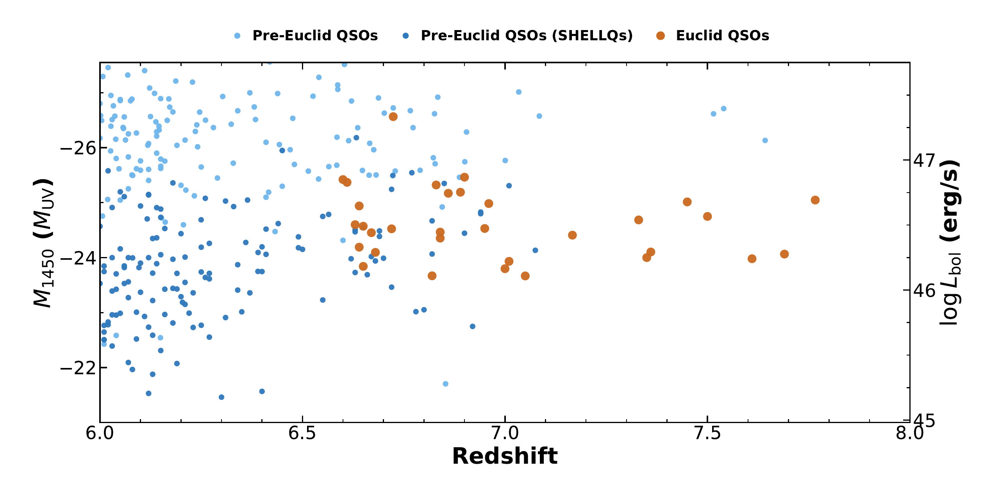

Euclid high-z quasars
Finding quasars beyond z = 7 opens a window onto the earliest supermassive black holes, but previous surveys could reach only the brightest objects. Our Euclid search discovered 31 quasars at z = 6.6–7.8, including 12 beyond z = 7, more than doubling the known sample at these redshifts. This population lets us study how early black holes grew and use their light to probe intergalactic gas during reionization.
